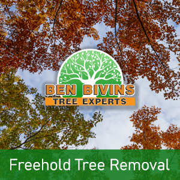
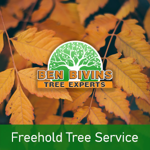

If you and your family want tree removal in Freehold or tree service in Freehold, Ben Bivins has you covered. Our family-owned business has been delivering first-rate tree services to the Freehold community for many years.
Freehold Tree Removal – Things to Know

Do you possess a dead or unappealing tree that should be removed? Tree removal is a dangerous task that requires the correct equipment, machinery and safety standards. Despite the fact that it may be appealing to eliminate a tree yourself from your Freehold residence, it could be a decision that puts yourself in jeopardy, without having the correct knowledge. There can be numerous factors why you are considering a tree removal in Freehold:- Tree is hindering too much sunshine in your yard
- Tree is lifeless or unhealthy as well as a potential safety risk
- Tree is overgrown and presents a danger if significant limbs drop
- Tree was harmed in a weather event and is past the point of saving
- You are considering remodeling that will ultimately damage the tree
- Tree is losing too many branches, leaves, or pine needles
Ben Bivins is fully insured and licensed tree company. Do not take the risk of using an uninsured tree removal company or depending upon a friend to accomplish this kind of job. Our team is skillfully qualified and our business carries the proper credentials to ensure your Freehold tree removal will be performed in the safest and most effective possible way. Tree removal requires the utilization of heavy machinery and dangerous equipment which should only be left to the pros. Leave it to the specialists! Call for an estimate on your Freehold tree removal.
In search of Tree Service in Freehold NJ?

We carry out all aspects of Freehold tree service. A few of these services include:- Tree Trimming – Are trees in your yard overgrown? Is your backyard lacking natural light due to an overgrown tree? Trimming a tree’s branches can make a big difference and could allow you to keep a tree you otherwise considered getting rid of.
- Pruning – Keep your trees happy and healthful. Pruning consists of assessing a tree’s overall health and making a decision to remove limbs selectively to optimize its wellness and sustainability.
- Crown Reduction – We can decrease the size of your tree’s cover using this process. Our team will evaluate your trees and make suggestions to take out particular branches that will reduce canopy cover.
- Emergency Tree Service – Have you got a downed tree that requires urgent attention? Is there a tree which is close to causing destruction if not addressed promptly? You might be a prospect for emergency tree service.
If you’re a Freehold resident requiring tree service, Contact us today. Scheduling can vary depending on weather, season and our current workload. We will give you a quotation and let you know date ranges available for service after assessing your particular needs.
Freehold Firewood for Sale
It’s no real shock that a Freehold tree removal company can have an excess supply of firewood! If you are searching for firewood for a wood burning stove or fireplace, call us today. Firewood availability varies throughout the year.